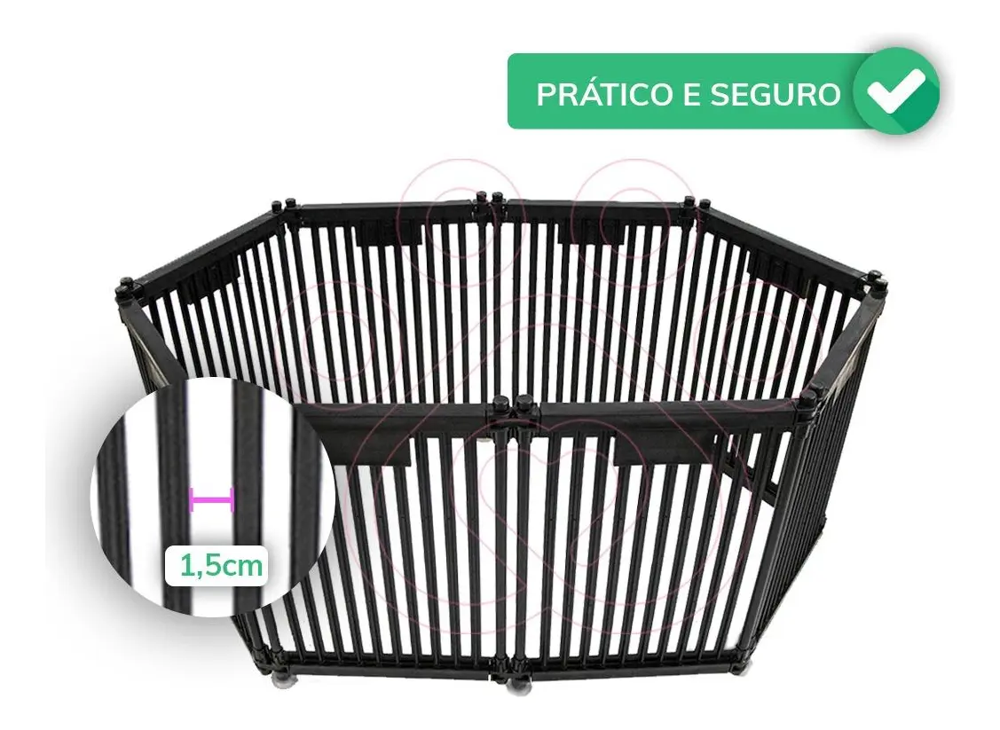
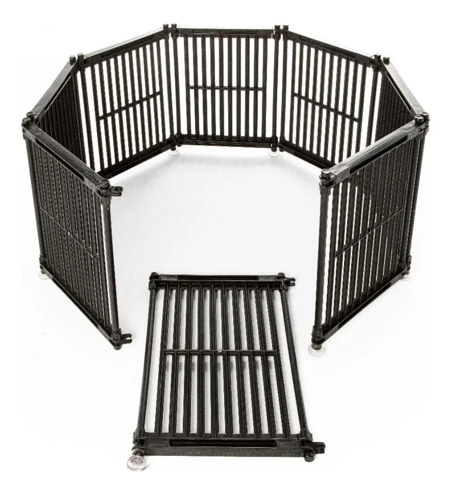
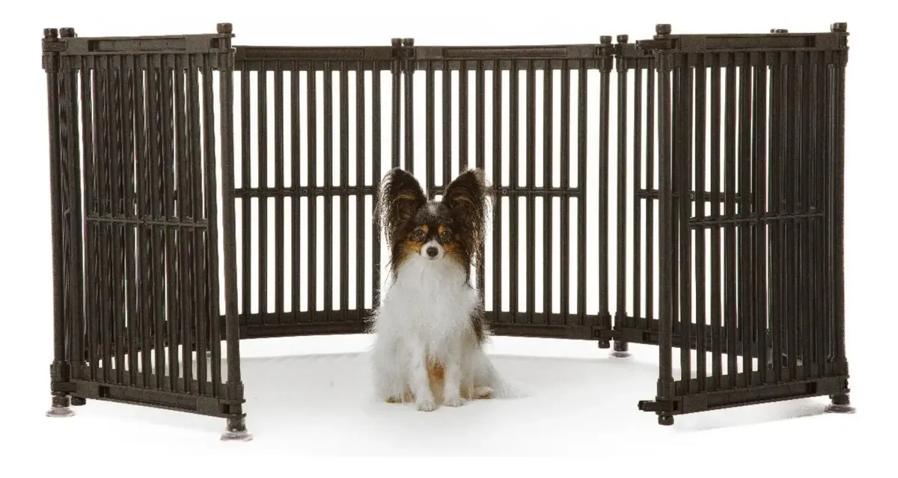
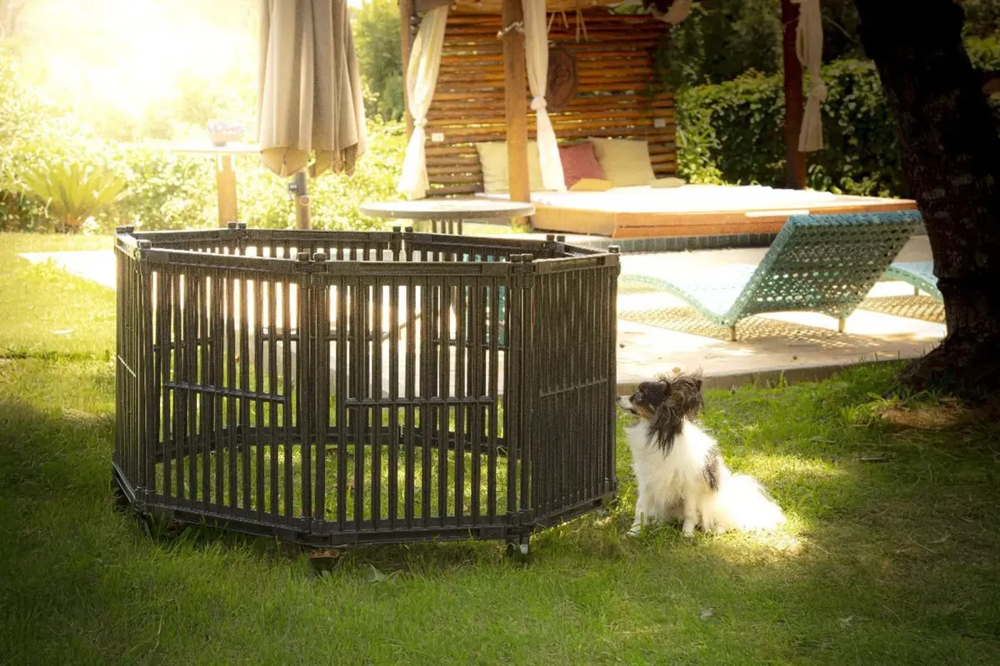
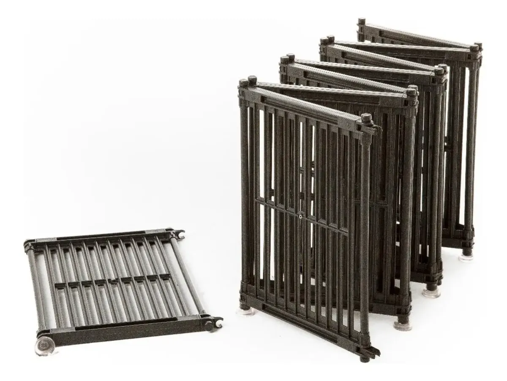

Um cercado para cachorros bem escolhido resolve um problema bem comum de quem tem filhote em casa: onde deixar o cão sozinho por um tempo sem que ele destrua a sala, mastigue fio elétrico ou fuja para um cômodo perigoso. O cercado Divipets, com 8 painéis dobráveis de 60cm de altura, promete resolver isso com uma estrutura modular que pode ser configurada em diferentes formatos, ideal tanto para filhotes em fase de adaptação quanto para cães pequenos que precisam de uma área delimitada dentro ou fora de casa.
Este review analisa o produto anunciado como "cercado para cachorros gatos Divipets 8 painéis 60cm altura" a partir das fotos e especificações divulgadas pelo vendedor, cruzando com boas práticas de contenção segura e socialização de filhotes, para ajudar você a decidir se essa é a cerca para cachorro certa para o seu pet. Se você já resolveu a alimentação, um comedouro com suporte pode complementar bem o espaço montado dentro do cercado.
Resumo rápido
- O Brasil tem cerca de 52,2 milhões de cães domiciliados, segundo estimativa do IBGE reportada pelo CRMV-SP — a maior parte deles passa por uma fase de filhote em que a contenção segura do ambiente é recomendada por profissionais de comportamento animal.
- O setor pet brasileiro faturou R$ 77,96 bilhões em 2025, com alta projetada para 2026, segundo dados da Abinpet/IPB divulgados em release oficial da Câmara Setorial do Ministério da Agricultura (Gov.br, 2025) — cercados e itens de contenção estão entre as categorias que mais crescem junto com a chegada de filhotes.
- O cercado Divipets tem 8 painéis dobráveis de 60cm de altura, sem necessidade de ferramentas para montar, e pode ser configurado em diferentes formatos conforme o espaço disponível.
- É indicado principalmente para filhotes, cães de porte pequeno a médio e tutores que precisam delimitar uma área dentro ou fora de casa — não é a melhor escolha isolada para cães de grande porte com facilidade para pular obstáculos baixos.
9,1/10 — Excelente custo-benefício para filhotes e cães pequenos
Resumo em uma linha: Estrutura modular, fácil de montar e guardar, que resolve contenção segura sem precisar reformar a casa.
Ideal para: Tutores de filhotes, cães de porte pequeno a médio, apartamentos, quintais e quem precisa de uma área delimitada temporária ou permanente.
Não ideal para: Cães de grande porte com facilidade para pular ou saltar obstáculos de 60cm sem supervisão.
Onde comprar: Mercado Livre, com frete e condições de pagamento variáveis por vendedor.
O conjunto é formado por 8 painéis metálicos dobráveis, com 60cm de altura cada, conectados por dobradiças que permitem montar o cercado em diferentes formatos — octogonal fechado, retangular, em L encostado na parede, ou até em linha reta como uma cerca para cachorro simples para dividir um ambiente. Não é preciso parafusos ou ferramentas para a montagem básica, o que facilita bastante para quem quer testar o melhor formato para o espaço disponível em casa.

Essa flexibilidade de formato é um dos maiores diferenciais frente a uma cerca fixa de madeira ou tela: o cercado pode acompanhar mudanças de rotina, ser levado para outro cômodo, para a varanda, ou até guardado quando o cão já estiver treinado e não precisar mais da contenção diária. Para quem também tem gato em casa, vale saber que o mesmo cercado costuma servir para delimitar área de gatos filhotes, já que a altura e o espaçamento dos painéis atendem aos dois perfis de pet pequeno.
Profissionais de comportamento animal costumam recomendar algum tipo de contenção segura — seja cercado, seja um cômodo delimitado — durante a fase de adaptação do filhote, principalmente nas primeiras semanas em um novo lar. Um espaço delimitado reduz o acesso do filhote a fios elétricos, plantas, produtos de limpeza e objetos pequenos que podem ser engolidos, ao mesmo tempo em que dá previsibilidade à rotina de sono, alimentação e higiene do cão nesse período inicial.
Isso é especialmente relevante considerando que boa parte dos 52,2 milhões de cães que vivem em lares brasileiros, segundo estimativa do IBGE reportada pelo CRMV-SP, passa em algum momento pela fase de filhote — período em que o comportamento exploratório é mais intenso e o risco de acidente doméstico é maior. Um cercado bem posicionado ajuda a criar uma "zona segura" enquanto o tutor não pode supervisionar o cão em tempo integral, sem isolar completamente o filhote do convívio da casa, já que os painéis vazados permitem ver e ouvir o que acontece ao redor.

🐾 Filhote destruindo a casa ou fugindo pelo quintal? O cercado Divipets resolve isso em minutos, sem obra e sem parafuso — e as unidades com desconto costumam esgotar rápido nas promoções do Mercado Livre.
Ver preço e disponibilidade no Mercado Livre →Link de afiliado: podemos receber uma comissão por compras feitas através deste link, sem custo adicional para você.
O vídeo abaixo, divulgado pelo vendedor, mostra a montagem e o formato do cercado Divipets na prática.
Vídeo divulgado pelo vendedor no anúncio do Mercado Livre.
Para quem busca especificamente um cercado para cachorros pequenos, o formato octogonal fechado costuma ser o mais indicado: cria uma área contida em todos os lados, sem precisar de parede ou móvel como apoio, e cabe em cantos de sala, quarto ou varanda sem ocupar muito espaço. Já para quem tem mais espaço disponível ou quer aproveitar uma parede já existente, montar os painéis em formato de cerca para cachorro em L ou reto reduz a quantidade de painéis necessários para fechar a área e ainda libera mais metragem útil dentro do cercado.

Vale lembrar que a altura de 60cm é pensada para filhotes e cães de porte pequeno a médio. Cães maiores, mais atléticos, ou raças com facilidade natural para pular — como algumas linhagens de spitz alemão ou border collie adultos — podem ultrapassar essa altura sem muito esforço, então nesses casos o cercado funciona melhor como apoio de treinamento e delimitação temporária do que como barreira à prova de fuga.
| Prós | Contras |
|---|---|
| 8 painéis modulares permitem vários formatos de montagem | Altura de 60cm pode não conter cães grandes ou muito ágeis |
| Montagem sem ferramentas nem parafusos | Estrutura metálica leve pode ser deslocada por cães mais fortes se não for fixada |
| Serve tanto para uso interno quanto em área externa protegida | Não é recomendado para exposição constante e direta à chuva |
| Fácil de desmontar e guardar quando não estiver em uso | Frete pode pesar no custo total dependendo da região |
| Também funciona para gatos filhotes, ampliando o uso do produto | Variações de qualidade entre vendedores no Mercado Livre — confira avaliações antes de comprar |

Sim, principalmente durante a fase de filhote ou de adaptação a um novo lar. Mesmo quem tem apenas um cão se beneficia de ter uma área delimitada para deixar o pet enquanto sai rapidamente, trabalha em home office sem poder supervisionar o tempo todo, ou recebe visitas em casa. É uma solução bem mais barata e reversível do que reformar um cômodo ou instalar uma cerca fixa, e pode ser levada junto em caso de mudança. Para cães já adultos e bem treinados, o cercado costuma ser mais útil como apoio pontual — por exemplo, durante uma recuperação pós-cirúrgica que exija repouso, situação em que o veterinário costuma recomendar restrição de movimento.
Se a rotina envolve deixar o cão sozinho por período mais longo, vale complementar o cercado com um tapete higiênico dentro da área delimitada, garantindo que o filhote tenha onde fazer as necessidades sem sujar o restante da casa.
Esta análise foi construída a partir das fotos e especificações reais do anúncio do produto, comparadas com boas práticas de contenção segura e socialização recomendadas para a fase de filhote, e com dados de mercado sobre o setor pet no Brasil. Não se trata de um teste laboratorial do material — recomendamos sempre conferir as avaliações de outros compradores no próprio anúncio antes de fechar a compra, já que a qualidade de fabricação pode variar entre vendedores. Veja nossa política editorial e de afiliados para entender como avaliamos e selecionamos produtos.
Para tutores de filhote, cães de porte pequeno a médio, ou quem precisa de uma área delimitada versátil dentro ou fora de casa, sim — a praticidade de montagem sem ferramentas, somada à flexibilidade dos 8 painéis, torna esse cercado uma das soluções mais eficientes e reversíveis do mercado para esse perfil de uso. Para cães grandes ou muito ágeis, vale considerar o cercado como apoio de treinamento e supervisionar o cão nos primeiros usos.
🐶 Dê ao seu filhote um cantinho seguro sem precisar reformar a casa — confira agora o preço atual do cercado Divipets no Mercado Livre.
Quero ver o cercado no Mercado Livre →Link de afiliado: podemos receber uma comissão por compras feitas através deste link, sem custo adicional para você.
Depende de como os 8 painéis são montados. Em formato octogonal fechado, cada painel mede em torno de 60 a 65cm de largura, então a área útil fica em torno de 2 a 3 m², mas o cercado pode ser configurado em formatos retos ou em L, encostado numa parede, para aproveitar melhor o espaço disponível.
É mais indicado para filhotes e cães de porte pequeno a médio. Cães de porte grande, ou cães adultos com facilidade para pular, podem ultrapassar os 60cm de altura, então o cercado funciona melhor como contenção de área ou apoio de treinamento do que como barreira definitiva para esses casos.
Sim, o modelo em painéis metálicos dobráveis é pensado para uso versátil: dentro de casa para delimitar um cômodo ou canto do filhote, e em área externa como quintal ou varanda, desde que protegido de exposição direta e constante a chuva.
Não. Os painéis dobráveis se conectam por dobradiças e não exigem ferramentas ou parafusos para a montagem básica, o que permite montar, desmontar e guardar o cercado com facilidade quando não estiver em uso.
O cercado para cachorros Divipets, com 8 painéis de 60cm de altura, é uma solução prática e reversível para quem precisa delimitar uma área segura para o cão — seja um filhote em adaptação, um cão pequeno em apartamento ou uma área externa que precisa de contenção temporária. A montagem sem ferramentas e a flexibilidade de formatos tornam esse cercado uma das opções mais versáteis do mercado para esse perfil de uso. Vale conferir o anúncio atual para preço, frete e avaliações antes de decidir.
🐾 Não deixe o filhote sozinho sem proteção — garanta o cercado Divipets com o melhor preço agora no Mercado Livre.
Ver oferta do cercado Divipets →Link de afiliado: podemos receber uma comissão por compras feitas através deste link, sem custo adicional para você.
Nildo Alves — curadoria de produtos pet no Smart Pet Gadgets. Testa e pesquisa produtos para cães e gatos, cruzando especificações de fabricante com boas práticas veterinárias e dados de mercado.
Sobre o Smart Pet Gadgets · Contato · Política editorial e de afiliados